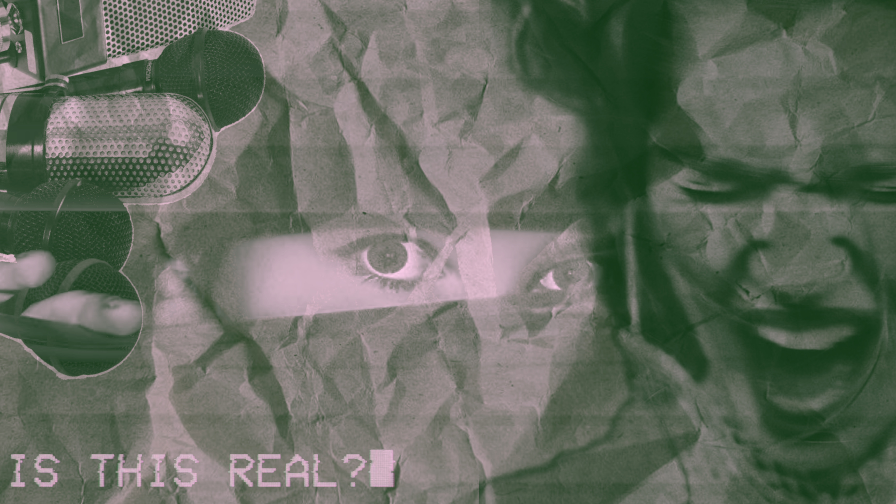

Nadat je deze teksten gelezen hebt hoop ik heel erg dat je je realiseert hoe jouw eigen informatie online
staat.
Wil je informeren over dit onderwerp of ben je benieuwd hoe je jouw eigen informatie kan beschermen? Dan heb
ik hier een paar hele interessante dingen voor jou
Documentaire: The Social Dilemma, te zien op Netflix. Deze documentaire gaat vooral over de
verborgen
gevaren en de enorme maatschappelijke invloed van sociale media en grote techbedrijven. Hoe apps
ontworpen zijn, algoritmes en mentale gezondheid.
Podcast: Naomi Naomi Brockwell TV, kan je bekijken op YouTube. Deze podcast gaat over alles wat
te maken heeft met digital footprint en hoe je je veiligheid en persoonlijke informatie beter kan
beschermen
Boek: The Art Of Invisibility: The World's Most Famous Hacker Teaches You How to Be Safe in the Age
of Big Brother and Big Data, online te lezen of in winkels verkrijgbaar. Dit boek is geschreven
door een bekende hacker die in dit boek vertelt over digitale privacy, anonimiteit en online veiligheid.
Het is een praktische gids voor bescherming. Het is een wake-upcall.
Korte video: This Is Why You Can't Erase Your Digital Footprint - Even If You Try, deze korte
video legt uit dat het meer is dan duidelijke tracking, maar veel meer. Van hoe snel je door berichten
scrollt naar je dag routine.

Ook heb ik nog andere bronnen gebruikt om deze website met jullie te delen, die hieronder vermeld zijn
Wat is een
digitale voetafdruk en kun je die wissen?
Hoe
moet je jezelf beschermen tegen digital footprint
Voordelen
sociale media, voor jongeren
Wat is een
filterbubbel?
Tips om uit de
filterbubbel te breken